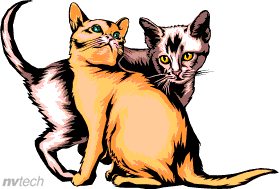

Mèo bên cửa
Nắng nghiêng qua cửa nhỏ
Mèo nằm nghe lá rơi
Trang vở vừa hé mở
Một ngày học thật vui.
Tuyển tập những vần thơ nhẹ nhàng về tình bạn cùng thú cưng và niềm vui học tập mỗi ngày.

Nắng nghiêng qua cửa nhỏ
Mèo nằm nghe lá rơi
Trang vở vừa hé mở
Một ngày học thật vui.
Em gõ từng dòng chữ
Mèo khẽ chạm bàn tay
Một đường link nho nhỏ
Nối bao điều hôm nay.
Chiều về bên trang sách
Mèo cuộn tròn ngủ ngoan
Em lưu bài vừa viết
Khép một ngày bình an.